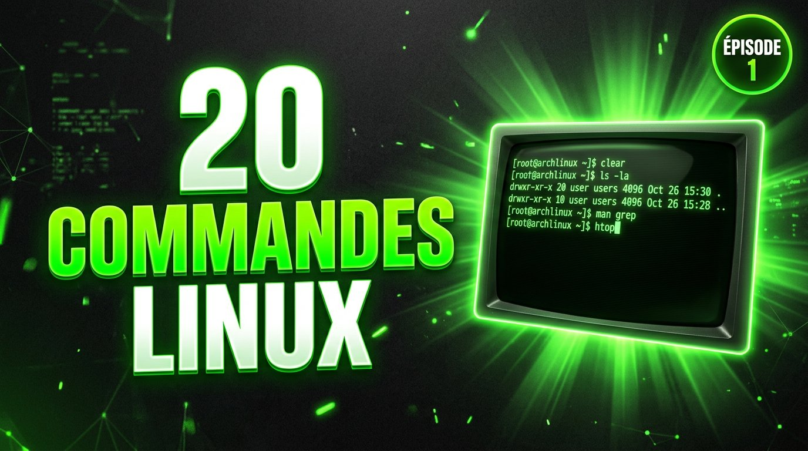
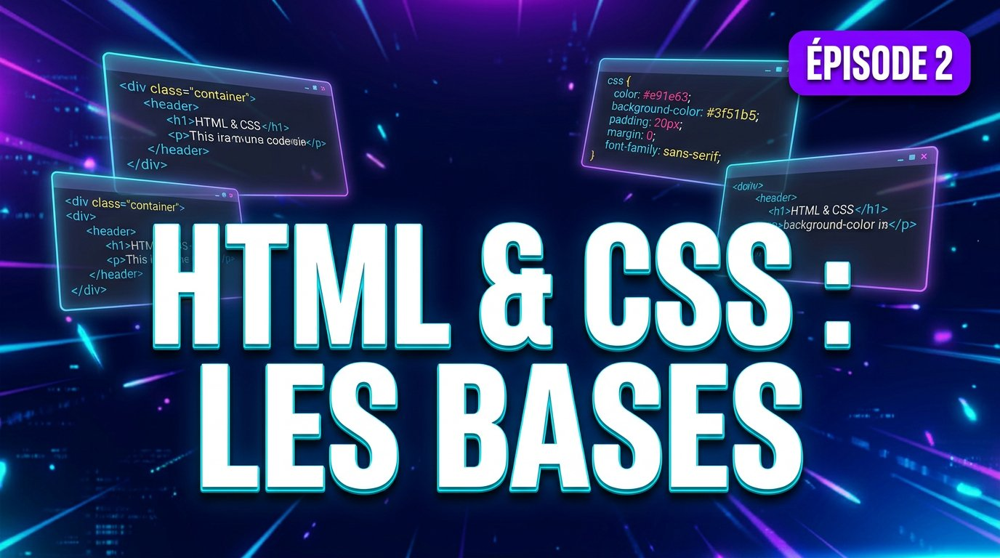
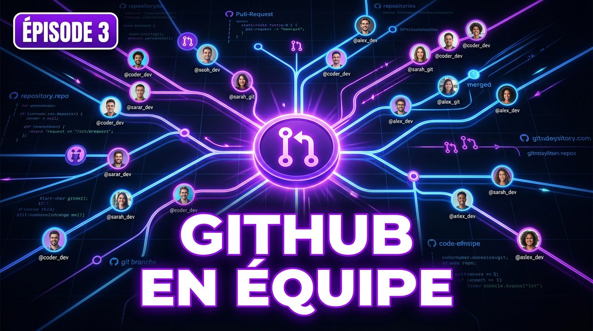
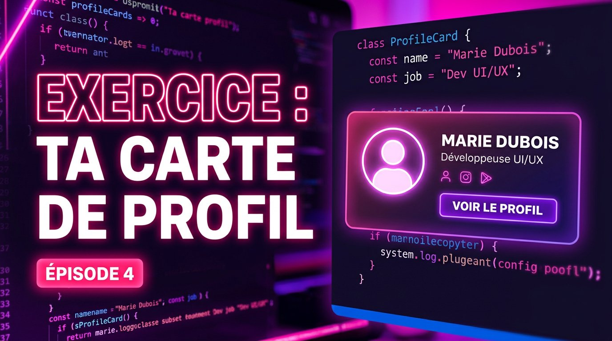

Des vidéos web animées,
avec sous-titres intégrés.
Chaque « vidéo » est une page web : tu lances la lecture, les scènes s'animent (terminal qui tape les commandes, code qui s'écrit tout seul…) et les sous-titres te donnent le texte exact à dire en voix off. 100 % HTML / CSS / JS, aucune dépendance.

20 commandes Linux
Le terminal expliqué simplement : pwd, ls, cd, grep, chmod… chaque commande tapée à l'écran avec son résultat.
Thème terminal
HTML & CSS : les bases
Deux langages, deux rôles : la structure d'une page, une règle CSS, le box model et le flexbox.
Thème éditeur
Travailler en équipe sur GitHub
Clone, branches, commits, push, pull request, review, merge et conflits : le flux complet d'une vraie équipe.
Thème GitHub
Exercice : ta carte de profil
Un exo complet à faire chez toi : code tapé + aperçu live, et les 3 erreurs que tout le monde rencontre, avec leurs fixes.
Thème créatifDocker : les conteneurs
La métaphore du port de Cotonou, image vs conteneur, premier run, nginx sur un port, ton Dockerfile en 5 lignes et l'erreur « port already in use ».
Thème DockerLe réseau expliqué : IP, DNS, HTTP
Le voyage d'une page web : adresse IP, ping, l'annuaire DNS, la conversation HTTP, les codes 200/404/500, HTTPS et les ports.
Thème réseauTa prochaine vidéo
Les permissions, git avancé, mettre un site en ligne… copie le dossier modele, ou envoie-moi le thème !
À créerCréer une nouvelle vidéo en 3 étapes
Pas besoin de savoir coder : chaque vidéo n'est qu'un fichier de texte (JSON) qui décrit les scènes et les sous-titres. Le lecteur fait le reste.
Copie le modèle
Duplique le dossier modele et renomme-le, par exemple :
xcopy /E /I modele git-bases (PowerShell) ou
cp -r modele git-bases (Linux).
Écris ton script
Dans index.html, modifie le bloc JSON : une entrée par scène
(terminal, code, titre, grille…) et tes sous-titres [début, durée, "texte"].
Tout est commenté dans le fichier.
Ouvre et enregistre l'écran
Double-clique sur index.html, lance la lecture, et capture l'écran
(OBS, Xbox Game Bar…) en lisant les sous-titres comme prompteur.